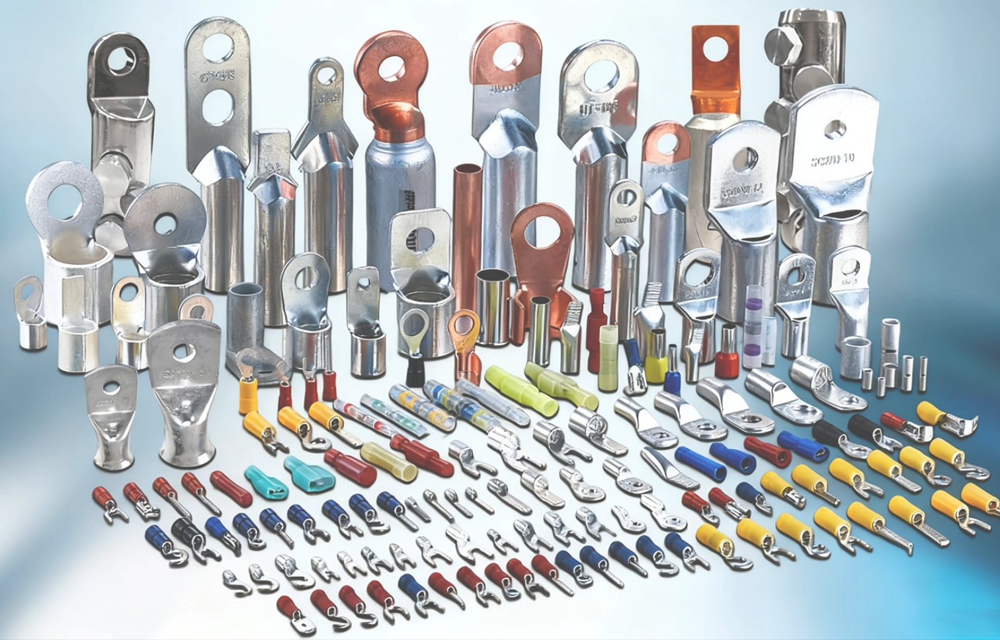

JJW Terminal Lug Series Awarded CE Certification

Recently, JJW Electric and Instrument Engineering Limited announced that its Terminal Lug series has successfully obtained CE certification (Conformité Européenne), marking that the products meet EU safety, health and environmental protection requirements.
About CE Certification
CE certification is a mandatory safety conformity marking in the EU market. Products sold in the EU market must bear the CE mark, indicating compliance with the essential requirements of relevant EU directives. Obtaining CE certification is a necessary condition for products to enter the European Economic Area (EEA) market.
Certified Product Range
The products awarded CE certification include:
• Copper Terminal Lugs
• Aluminum Terminal Lugs
• Bi-metallic Lugs
• Insulated Terminals
• Double Hole Lugs
All products are manufactured according to international standards, covering a wide cross-sectional range from 1.5mm² to 630mm², suitable for various electrical connection scenarios.
Compliant Directives and Standards
1. Low Voltage Directive (LVD 2014/35/EU): Ensures safe use of products within rated voltage 50-1000V AC or 75-1500V DC
2. RoHS Directive (2011/65/EU): Restricts the use of hazardous substances in electrical and electronic equipment, including lead, mercury, cadmium, etc.
3. Relevant Standards: Complies with IEC 60228, IEC 60320 and other international standards
Significance of Certification
1. Market Access: CE certification is the passport for products to enter 27 EU member states and the European Economic Area, eliminating technical barriers to trade
2. Quality Assurance: The certification process covers full-process quality control from raw material procurement, manufacturing to finished product inspection
3. Customer Confidence: The CE mark is highly recognized in the European market, enhancing customer trust in product safety and compliance
4. Competitive Advantage: Among numerous suppliers, products with CE certification are more competitive in the market
Application Areas
CE-certified terminal lugs can be widely applied in:
• Power transmission and distribution systems
• Industrial automation and control systems
• Renewable energy (solar, wind power)
• Building electrical installation
• Rail transit
• Marine and offshore engineering
JJW Electric will continue to focus on product quality improvement and international certification acquisition, providing safer and more reliable electrical connection solutions for global customers. For more product information or to obtain a copy of the certification certificate, please contact us at: leslie.zhu@jjwelectric.com